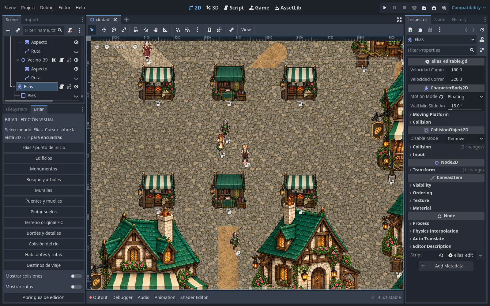

Briar F.C — edición visual en Godot
Abrir y empezar
- Descomprimí el ZIP en una carpeta e importá project.godot con Godot 4.5.1 o posterior. Esperá a que termine de importar las texturas.
- Abrí godot/ciudad.tscn y la vista 2D. La ciudad ya existe en la escena, sin ejecutar el juego.
- Abrí la pestaña Briar junto a FileSystem. Elegí Elías / punto de inicio. Después poné el cursor sobre la vista 2D y pulsá F para encuadrar. La rueda cambia el zoom.
- Editá, guardá con Ctrl+S y probá con F5. F6 ejecuta la escena actual.
Si no aparece el panel Briar, activá el complemento en Proyecto → Ajustes del proyecto → Plugins. También podés editar todo desde el árbol de la escena y las herramientas nativas de Godot.

Elegir qué editar
| Elemento | Ubicación en la escena |
|---|---|
| Casas y comercios | Actores/Edificios |
| Castillo, catedral, universidad, mando y biblioteca | Actores/Monumentos |
| Bosque y árboles | Actores/Vegetacion |
| Murallas y accesos | Actores/Murallas |
| Adornos, raíces y elementos de piso | Suelo_decorado |
| Puentes y embarcaderos | Puentes_y_muelles |
| Terreno original en tiles de 32 px | Terreno/Suelo_FC_32px |
| Paleta de nuevos suelos y agua | Terreno/Pintar_suelos_32px |
| Transiciones y detalles | Terreno/Bordes_y_detalles_32px |
| Máscara original de colisión del río | Terreno/Colision_rio_8px |
| Punto inicial y cámara | Actores/Elias |
| Habitantes y caminos | Actores/Habitantes; hijo Ruta de cada vecino |
| Marcadores de viaje rápido | Destinos |
Mover y agregar piezas
Seleccioná una pieza en el árbol o en el mapa y arrastrala. Ctrl+D duplica el objeto completo; Supr lo borra; Ctrl+Z deshace. Los objetos están agrupados para seleccionar juntos su dibujo y su estructura. Sus hijos siguen accesibles desde el árbol.
Mover una casa también mueve su colisión. Para cambiarla, activá Mostrar colisiones y seleccioná el hijo Colision/Forma… de la casa. Ocultar estas ayudas no desactiva la colisión.
La carpeta godot/piezas/ incluye 78 escenas reutilizables con arte, anclas y geometría. Elegí el grupo padre adecuado en el árbol y arrastrá una escena .tscn a la vista 2D. Conservá la escala (1, 1) para mantener las proporciones del arte aprobado. Mantené un ejemplar de cada monumento si querés conservar el diseño F.C.
Pintar suelos y modificar el río
Seleccioná Pintar suelos. En el panel nativo TileMap, elegí una textura de la paleta, seleccioná uno o varios tiles y pintá en la vista 2D. La paleta contiene los materiales aprobados.
- Los tiles secos permiten caminar sobre la máscara anterior del río.
- El agua profunda, media y somera bloquea el paso.
- Los edificios y los muros mantienen su propia colisión aunque pintes debajo.
- Borrar un tile de pintura revela otra vez el dibujo y la colisión originales.
- Colocá las transiciones de Bordes y detalles para retocar las orillas. Los bordes nuevos se componen manualmente; no se recalculan automáticamente.
La capa Suelo_FC_32px conserva el terreno continuo aprobado, dividido en 91.200 tiles de 32 px. Podés copiar, pintar y borrar estos tiles. Si modificás directamente esa capa, ajustá también Colision_rio_8px donde corresponda. La capa Pintar_suelos permite cambiar material y paso sin tocar la base. El río no es una curva vectorial: su dibujo está en los tiles.
Alargar un puente
Desplegá el puente para ver sus cabeceras y tramos centrales. Duplicá un tramo central y mové la cabecera final para hacerle lugar.
| Variante | Desplazamiento por tramo central |
|---|---|
| SO–NE, archivos con _ne_ | X +128; Y −128 px |
| NO–SE, archivos con _se_ | X +128; Y +128 px |
La baranda y la zona de paso sobre el agua acompañan a cada parte. Conservá la escala (1, 1) y utilizá las variantes dibujadas para cada orientación. Los extremos deben llegar a terreno seco accesible. Probá el cruce después de modificarlo.
Personajes y recorridos
Mover Elías cambia el punto inicial del juego; su cámara lo acompaña. En cada vecino podés modificar nombre, diálogo, oficio, velocidad y pausa desde el Inspector.
Activá Mostrar rutas, seleccioná el hijo Ruta del vecino y editá los puntos del Path2D. Mover al vecino completo también desplaza su ruta. Si colocás un obstáculo en el recorrido, el vecino se detiene y cambia de sentido; ajustá los puntos para que alcance el destino que quieras. Las rutas de las barcas se editan de la misma manera.
Los marcadores de Destinos determinan la posición del viaje rápido. El mapa de viaje se renderiza desde la escena actual.
Guardado y versiones anteriores
La fuente de verdad para Godot es godot/ciudad.tscn y sus recursos. El juego respeta los nodos, posiciones y tiles que guardaste. No necesita ejecutar Python, Node.js o Tiled, ni reconstruir el mapa.
Los cambios visuales de Godot no se exportan automáticamente al HTML, Tiled o mapa/ciudad.json. Esos archivos se conservan como la versión F.C anterior y respaldo del generador. Tampoco necesitás npm run build o npm run layout: pertenecen al flujo anterior y pueden modificar texturas compartidas.
tools/create_editable.gd es una migración de una sola vez. Se niega a reemplazar una escena editable existente salvo que se le pase expresamente --overwrite-editable. No lo ejecutes para la edición cotidiana.
Los scripts antiguos ciudad.gd, explorador.gd, habitante.gd y ambiente.gd se conservan como referencia, pero no controlan la escena editable. La documentación anterior está en docs/LEEME_FC_ANTERIOR.md.
Controles y comprobación
WASD/flechas: caminar. Mayús: correr. E: conversar. M/Esc: mapa. N: iluminación. C: colisiones.
Se conservan F.C de 9.600 × 9.720 px, 1.766 objetos, 388 habitantes, siete barcas, siete puentes, dos muelles y el arte aprobado a su escala original.
El informe de pruebas está en docs/validacion_edicion_visual.json. Para repetirlo: godot --headless --path . --script tools/test_editable.gd. El test usa una copia temporal y no reemplaza tu escena.
Guía visual: docs/GUIA_EDICION_VISUAL.html. Se abre sin conexión desde el panel Briar.